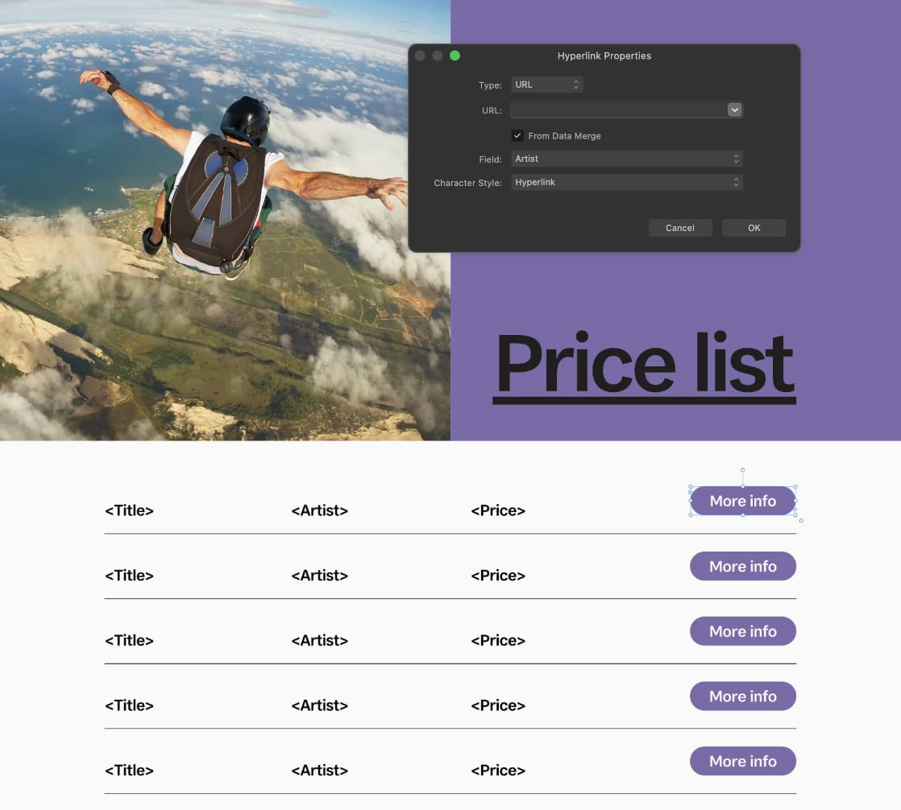

Data merge
Data merge inserts text and image links from other programs into your publication pages.

Data merge inserts text and image links from other programs into your publication pages.
Data merge means injecting data from a data source into documents such as personalized certificates, letters, envelopes, greeting cards, as well as mailing labels, badges, passes to more complex multi-page business cards, catalogs, photo albums or any deliverable where personalization is needed.
For example, you can publish ID passes that are personalized with passholder's names and that person's profile picture. You can also generate entry passes that contain unique QR codes from a field of a data merge source provided by your client. Passes can then be validated by scanning with suitable hardware or an app.
A Data Merge Manager is used to add the external data source, manage this resource and generate the merged document.
Data sources include text (plain/CSV/TSV), JSON and XLSX spreadsheet files (e.g. Microsoft Excel, Apple Numbers, LibreOffice). The text files could be an exported address book or contact lists. Your data records could also include image links (resource path names) which can be be associated with a picture frame in Publisher—on merging, the referenced images (e.g., profile or product photos) merge into picture frames sequentially.
The key steps for successful data merging are:
The data source exists outside of Affinity Publisher, typically exported from another app or website. Contact lists can be exported from google.com, outlook.com and other services.
The source needs to be available in advance of data merging and have a consistent logical structure that is finalized. Of course, it needs to be populated with data records.
You can add (or alter) data records to the external data source at any time (even after merging) but don't worry if some records don't contain data as these will be treated as blank fields once merged.
Several scenarios are possible:
When you add an external data source to your document it will be embedded in your file. You'll then be able to view its fields. Once added, the source will be remembered the next time you open your document. If the original data source file has been modified, you can update the embed copy manually; this will not update automatically.
Instead of merging all records you can filter by a specific range (e.g., 100-200). This lets you control which set of records are output. To filter from a specific record number to the last record in your the data source just enter a final value which far exceeds your final record number (e.g., 100-20000).
In order to merge information from your added data source(s) into your document, you need to insert text or image link fields into either a text object (e.g. a text frame) or a picture frame.
You can insert fields that contain metadata about the merged data source and records:
For example, if your data source's filename includes the file's creation date, you might include the filename and an index in a generated letter's footer.
When a field in a data source contains a web address (URL), an anchor, an email address, or a path to a file, a hyperlink added to text or an object in a data merge layout can use the field's value as its target.

After a data merge is performed, the resulting document will contain a hyperlink (on the Hyperlinks panel) for each of the data source's records.
Once you've inserted all necessary placeholder fields, you are ready to merge the source data and your original publication to a new Publisher document. New pages are automatically created to allow for all data records to be processed and presented in your document.
The Data Merge Manager also lets you manually control delimiters and quote marks in the data source, as well as jump to the source's file location and update (or delete) a data source.
Records on the page will be removed and replaced with placeholder fields.
The Data Merge Manager's Preview section lets you display the field's data itself (check Preview with record); you can also cycle through the data records using the navigation buttons.
The Data Merge Manager also lets you disable merging (uncheck Merge Enabled) to allow switching between multiple data sources. You can also control the number of pages generated on merging.